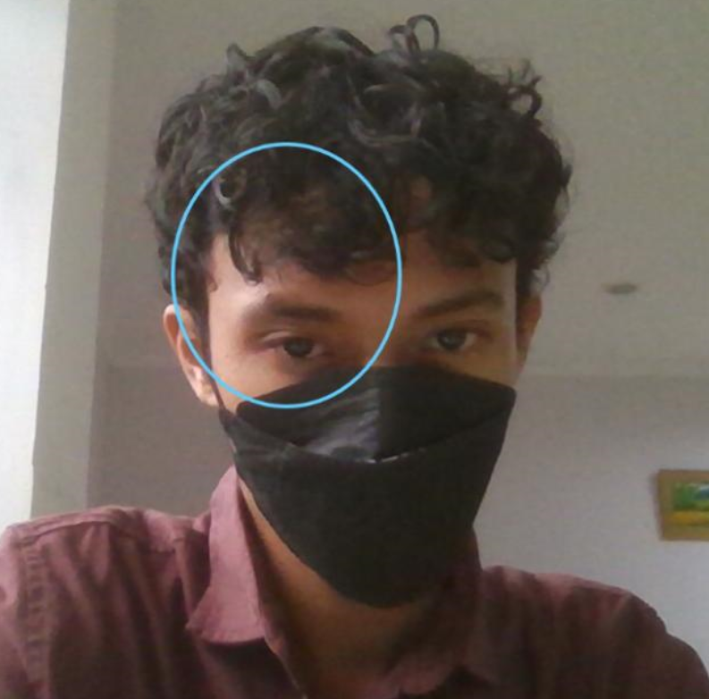

Saya Sahrul Setiawan yang biasa dipanggil "Arul" oleh orang terdekat. saya mahasiswa Universitas Islam Syarif Hidayatullah Jakarta Program studi Ilmu Perpustakaan Semester 5. Umur saya sudah menginjak 21 tahun dimana sekarang selain belajar, saya juga menekuni hobi mendesain saya yang sudah berlangsung selam 5 tahun. Domisili terbaru saya yaitu di Ciputat, tak jauh dari Kampus 1 UIN Syarif Hidayatullah Jakarta. Saya memiliki mimpi menyatukan ilmu perpustakaan dengan desain komunikasi yang keduanya saya tekuni. sehingga di masa depan saya tidak hanya menjadi pustakawn handal, tapi juga memiki skill tambahan menjadi seorang ilustrator.